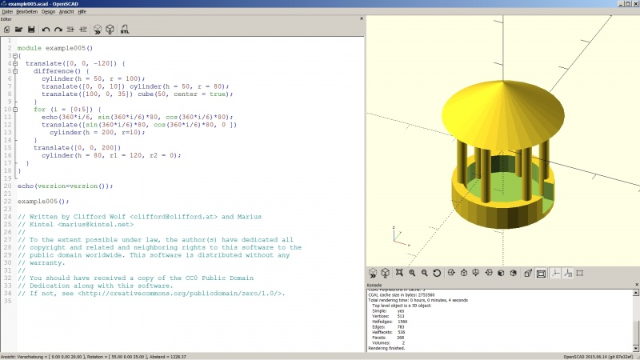

|
| Tutoriel |
|---|
| Importer code OpenSCAD |
| Niveau |
| Débutant |
| Temps d'exécution estimé |
| 30 minutes |
| Auteur |
| r-frank |
| Version de FreeCAD |
| 0.16.6704 |
| Fichier(s) exemple(s) |
Introduction
OpenSCAD, tout comme FreeCAD, est un logiciel de CAO 3D open source. Mais tandis que FreeCAD utilise une approche visuelle, OpenSCAD utilise une interface de programmation pour effectuer des opérations en 3D. L'atelier OpenSCAD peut être utiliser pour importer un code d'objet OpenSCAD et avoir accès à certaines des opérations de maillage possibles avec OpenSCAD.
Installation d'OpenSCAD
Les utilisateurs de Mac peuvent télécharger les fichiers binaires à partir de du site d'OpenSCAD.
Les utilisateurs Linux Ubuntu/Mint peuvent l'installer à partir des dépôts du système ou du site d'OpenSCAD.
Les utilisateurs de Windows peuvent télécharger le programme à partir du site d'OpenSCAD.
Puisque seul l'exécutable OpenSCAD est nécessaire pour FreeCAD, les utilisateurs Windows peuvent installer la version portable s'ils le souhaitent.
Configurerl'atelier OpenSCAD dans FreeCAD
- Ouvrir FreeCAD
- Passez à l' atelier OpenSCAD
- Choisir Édition> Préférences > OpenSCAD dans le menu principal
- Définir le lien vers l'exécutable OpenSCAD (section: paramètres généraux OpenSCAD)
- toutes les autres valeurs de la page de configuration peuvent être laissées par défaut
Le modèle d'échantillon
Ici, nous utiliserons le fichier example005.scad depuis les anciens exemples OpenSCAD, mais n'hésitez pas à utiliser n'importe quel fichier scad de votre goût.

{kind=link}
Importation du modèle dans FreeCAD
- Dans FreeCAD, il suffit de choisir Fichier → Ouvrir et choisissez le fichier .scad que vous souhaitez importer.
- Il n'est pas important que l'atelier soit activé, l'atelier OpenSCAD lui-même n'est nécessaire que lorsque vous appliquez des fonctionnalités spéciales à votre modèle
- FreeCAD importera le fichier OpenSCAD et construira une arborescence avec des opérations primitives et booléennes
- Tutoriel terminé